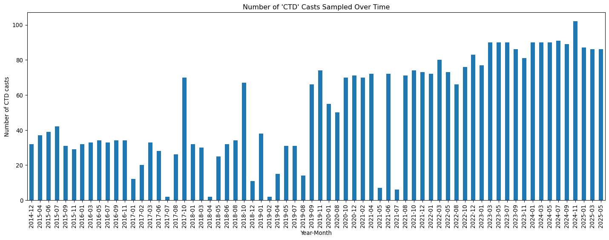
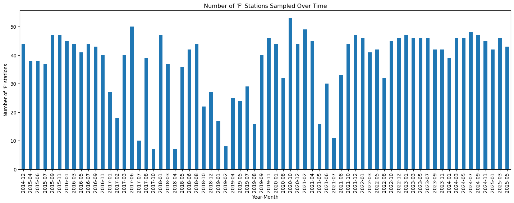
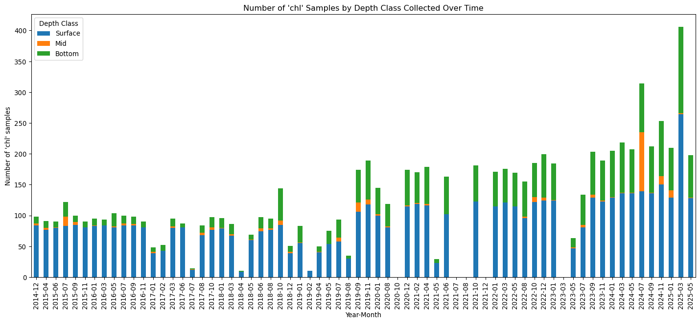
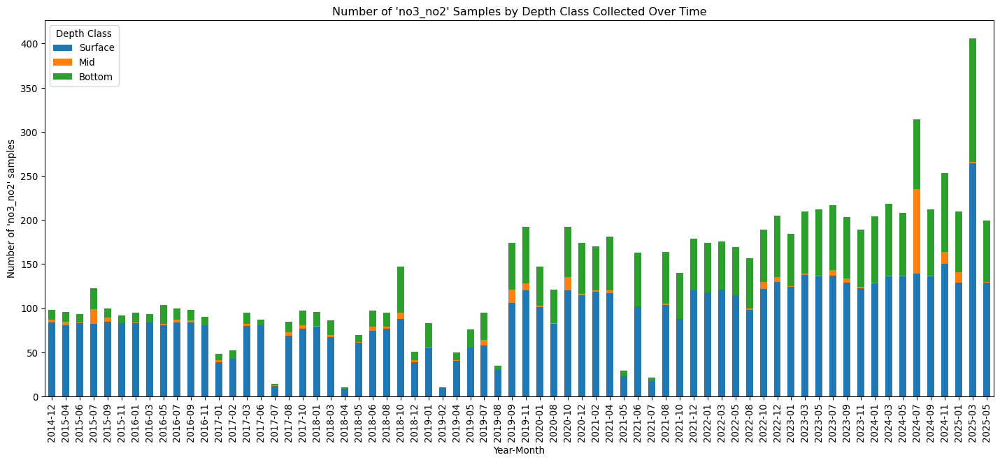
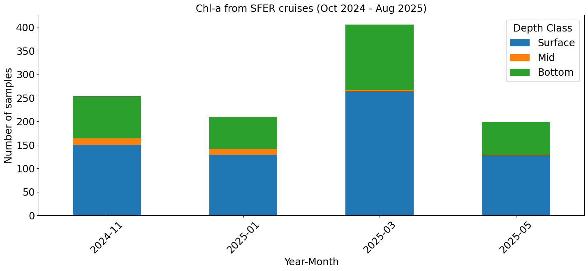
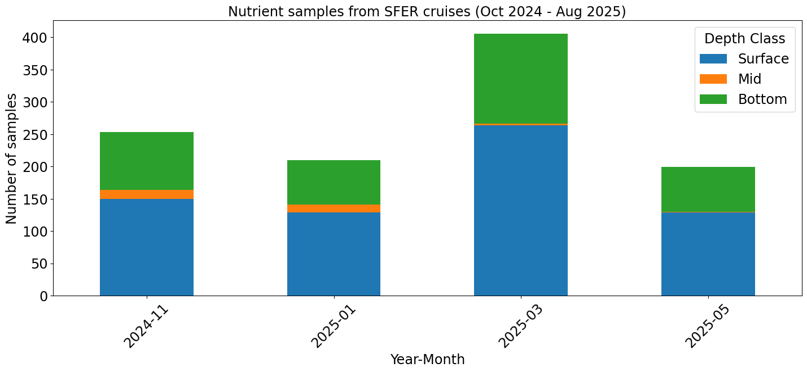
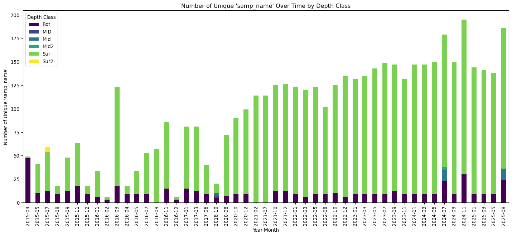
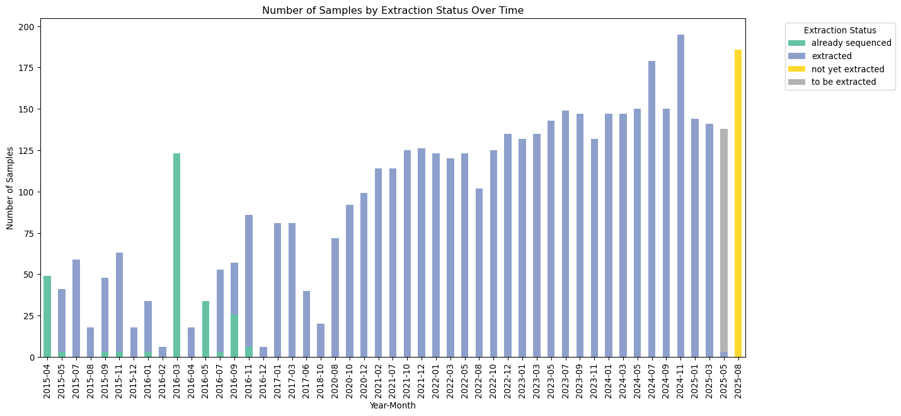

# Load libraries and 'SFER_data.csv' tableimport pandas as pdimport matplotlib.pyplot as plt# Load SFER data tablesfer_data = pd.read_csv('data/SFER_data.csv')print(sfer_data.head())
keyfield cruise_id year month day time \
0 20140112_1323_WS14335_1_0_Surf WS14335 2014 12 1 13:23
1 20140112_1332_WS14335_2_0_Surf WS14335 2014 12 1 13:32
2 20140112_1353_WS14335_3_0_Surf WS14335 2014 12 1 13:53
3 20140112_1710_WS14335_EKIN_0_Surf WS14335 2014 12 1 17:10
4 20140112_1721_WS14335_EKMID_0_Surf WS14335 2014 12 1 17:21
datetime lat_deg lat_min lat_dec ... no3_flag no2 \
0 2014-12-01 13:23:00 25 38.6984 25.6450 ... NaN 0.04
1 2014-12-01 13:32:00 25 38.4917 25.6415 ... NaN 0.06
2 2014-12-01 13:53:00 25 38.7510 25.6458 ... NaN 0.07
3 2014-12-01 17:10:00 25 20.0186 25.3336 ... NaN 0.11
4 2014-12-01 17:21:00 25 18.9835 25.3164 ... NaN 0.07
no2_flag si si_flag chl chl_flag pheo pheo_flag notes
0 NaN 0.1 NaN 1.286 NaN 0.938 NaN NaN
1 NaN 0.1 NaN 1.290 NaN 0.280 NaN NaN
2 NaN 0.3 NaN 0.809 NaN 0.163 NaN NaN
3 NaN 0.5 NaN 0.977 NaN 0.353 NaN NaN
4 NaN 0.1 NaN 2.567 NaN 0.251 NaN NaN
[5 rows x 43 columns]
Code
# Create a table with a list of unique cruise_ids and some other useful statscruise_ids = sfer_data['cruise_id'].unique()cruise_table = pd.DataFrame(cruise_ids, columns=['cruise_id'])# Calculate statistics for each cruise using groupby and aggregationstats = sfer_data.groupby('cruise_id').agg( year=('year', 'first'), month=('month', 'first'), num_c_stations=('station', lambda x: sfer_data.loc[x.index][sfer_data.loc[x.index]['station_type'] =='C']['station'].nunique()), num_f_stations=('station', lambda x: sfer_data.loc[x.index][sfer_data.loc[x.index]['station_type'] =='F']['station'].nunique()), c_surface_samples=('depth_class', lambda x: ((sfer_data.loc[x.index, 'station_type'] =='C') & (x =='Surface')).sum()), c_mid_samples=('depth_class', lambda x: ((sfer_data.loc[x.index, 'station_type'] =='C') & (x =='Mid')).sum()), c_bottom_samples=('depth_class', lambda x: ((sfer_data.loc[x.index, 'station_type'] =='C') & (x =='Bottom')).sum()), f_surface_samples=('depth_class', lambda x: ((sfer_data.loc[x.index, 'station_type'] =='F') & (x =='Surface')).sum()), f_mid_samples=('depth_class', lambda x: ((sfer_data.loc[x.index, 'station_type'] =='F') & (x =='Mid')).sum()), f_bottom_samples=('depth_class', lambda x: ((sfer_data.loc[x.index, 'station_type'] =='F') & (x =='Bottom')).sum()), chl_samples=('chl', 'count'), no3_no2_samples=('no3_no2', 'count')).reset_index()# Merge the calculated stats into the cruise_tablecruise_table = pd.merge(cruise_table, stats, on='cruise_id')print(cruise_table.head(3))# Print total number of unique cruise_ids and totals of stats aboveprint("Total unique cruise_ids:", cruise_table['cruise_id'].nunique())print("Total C stations:", cruise_table['num_c_stations'].sum())print("Total F stations:", cruise_table['num_f_stations'].sum())last_cruise_id = cruise_table.sort_values(['year', 'month', 'cruise_id']).iloc[-1]['cruise_id']last_cruise_station_count = sfer_data.loc[sfer_data['cruise_id'] == last_cruise_id, 'station'].nunique()print(f"Total unique stations sampled in the last cruise ({last_cruise_id}): {last_cruise_station_count}")print("Total C surface samples:", cruise_table['c_surface_samples'].sum())print("Total C mid samples:", cruise_table['c_mid_samples'].sum())print("Total C bottom samples:", cruise_table['c_bottom_samples'].sum())print("Total chl samples:", cruise_table['chl_samples'].sum())print("Total no3_no2 samples:", cruise_table['no3_no2_samples'].sum())cruise_table.to_csv('cruise_table.tsv', sep='\t', index=False)
cruise_id year month num_c_stations num_f_stations c_surface_samples \
0 WS14335 2014 12 32 44 39
1 WS15103 2015 4 37 38 44
2 WS15148 2015 6 39 38 45
c_mid_samples c_bottom_samples f_surface_samples f_mid_samples \
0 3 11 45 0
1 4 10 38 0
2 1 9 38 0
f_bottom_samples chl_samples no3_no2_samples
0 0 98 98
1 1 91 96
2 0 90 93
Total unique cruise_ids: 60
Total C stations: 3571
Total F stations: 2537
Total unique stations sampled in the last cruise (WS25130): 129
Total C surface samples: 3793
Total C mid samples: 287
Total C bottom samples: 2633
Total chl samples: 8216
Total no3_no2 samples: 9217
Code
# Create a bar plot showing the number of 'C' type stations sampled over time# Filter for 'C' type stationsc_stations_data = sfer_data[sfer_data['station_type'] =='C'].copy()# Create a 'year_month' column for easier plotting over timec_stations_data['year_month'] = c_stations_data['year'].astype(str) +'-'+ c_stations_data['month'].astype(str).str.zfill(2)# Group by 'year_month' and count the number of unique stationsmonthly_c_stations = c_stations_data.groupby('year_month')['station'].nunique()# Create the bar plotplt.figure(figsize=(15, 6))monthly_c_stations.plot(kind='bar')plt.title("Number of 'CTD' Casts Sampled Over Time")plt.xlabel("Year-Month")plt.ylabel("Number of CTD casts")plt.xticks(rotation=90)plt.tight_layout()# Save the plot to a fileplt.savefig('figures/c_stations_over_time.png')plt.show()

Code
# Create a bar plot showing the number of 'F' type stations sampled over time# Filter for 'F' type stationsf_stations_data = sfer_data[sfer_data['station_type'] =='F'].copy()# Create a 'year_month' column for easier plotting over timef_stations_data['year_month'] = f_stations_data['year'].astype(str) +'-'+ f_stations_data['month'].astype(str).str.zfill(2)# Group by 'year_month' and count the number of unique stationsmonthly_f_stations = f_stations_data.groupby('year_month')['station'].nunique()# Create the bar plotplt.figure(figsize=(15, 6))monthly_f_stations.plot(kind='bar')plt.title("Number of 'F' Stations Sampled Over Time")plt.xlabel("Year-Month")plt.ylabel("Number of 'F' stations")plt.xticks(rotation=90)plt.tight_layout()# Save the plot to a fileplt.savefig('figures/f_stations_over_time.png')plt.show()

Code
# Create a 'year_month' column if it doesn't existif'year_month'notin sfer_data.columns: sfer_data['year_month'] = sfer_data['year'].astype(str) +'-'+ sfer_data['month'].astype(str).str.zfill(2)# Group by 'year_month' and 'depth_class', then count 'chl' samplesmonthly_chl_samples_by_depth = sfer_data.groupby(['year_month', 'depth_class'])['chl'].count().unstack()# Create the stacked bar plotmonthly_chl_samples_by_depth[['Surface', 'Mid', 'Bottom']].plot(kind='bar', stacked=True, figsize=(15, 7))plt.title("Number of 'chl' Samples by Depth Class Collected Over Time")plt.xlabel("Year-Month")plt.ylabel("Number of 'chl' samples")plt.xticks(rotation=90)plt.legend(title='Depth Class')plt.tight_layout()# Save the plot to a fileplt.savefig('figures/chl_samples_by_depth_class.png')plt.show()

Code
# Group by 'year_month' and 'depth_class', then count 'no3_no2' samplesmonthly_no3_no2_samples_by_depth = sfer_data.groupby(['year_month', 'depth_class'])['no3_no2'].count().unstack()# Create the stacked bar plotmonthly_no3_no2_samples_by_depth[['Surface', 'Mid', 'Bottom']].plot(kind='bar', stacked=True, figsize=(15, 7))plt.title("Number of 'no3_no2' Samples by Depth Class Collected Over Time")plt.xlabel("Year-Month")plt.ylabel("Number of 'no3_no2' samples")plt.xticks(rotation=90)plt.legend(title='Depth Class')plt.tight_layout()# Save the plot to a fileplt.savefig('figures/no3_no2_samples_by_depth_class.png')plt.show()

Code
# Define the time window for filteringstart_date ='2024-10'end_date ='2025-08'# Filter the 'chl' data for the specified time windowfiltered_chl_data = monthly_chl_samples_by_depth[ (monthly_chl_samples_by_depth.index >= start_date) & (monthly_chl_samples_by_depth.index <= end_date)]# Create the stacked bar plot for 'chl' samplesfiltered_chl_data[['Surface', 'Mid', 'Bottom']].plot(kind='bar', stacked=True, figsize=(15, 7))plt.title("Chl-a from SFER cruises (Oct 2024 - Aug 2025)", fontsize=18)plt.xlabel("Year-Month", fontsize=18)plt.ylabel("Number of samples", fontsize=18)plt.xticks(rotation=45, fontsize=18)plt.yticks(fontsize=18)plt.legend(title='Depth Class', fontsize=18, title_fontsize=18)plt.tight_layout()plt.savefig('figures/chl_samples_by_depth_class_2024-2025.png')plt.show()# Filter the 'no3_no2' data for the specified time windowfiltered_no3_no2_data = monthly_no3_no2_samples_by_depth[ (monthly_no3_no2_samples_by_depth.index >= start_date) & (monthly_no3_no2_samples_by_depth.index <= end_date)]# Create the stacked bar plot for 'no3_no2' samplesfiltered_no3_no2_data[['Surface', 'Mid', 'Bottom']].plot(kind='bar', stacked=True, figsize=(15, 7))plt.title("Nutrient samples from SFER cruises (Oct 2024 - Aug 2025)", fontsize=18)plt.xlabel("Year-Month", fontsize=18)plt.ylabel("Number of samples", fontsize=18)plt.xticks(rotation=45, fontsize=18)plt.yticks(fontsize=18)plt.legend(title='Depth Class', fontsize=18, title_fontsize=18)plt.tight_layout()plt.savefig('figures/no3_no2_samples_by_depth_class_2024-2025.png')plt.show()# Filter 'C' and 'F' station data for the specified time windowfiltered_c_stations = monthly_c_stations[ (monthly_c_stations.index >= start_date) & (monthly_c_stations.index <= end_date)]filtered_f_stations = monthly_f_stations[ (monthly_f_stations.index >= start_date) & (monthly_f_stations.index <= end_date)]# Combine the filtered data into a single DataFramestation_counts_df = pd.DataFrame({'C_Stations': filtered_c_stations,'F_Stations': filtered_f_stations})# Display the tableprint("Number of 'C' and 'F' type stations sampled (Oct 2024 - Aug 2025):")print(station_counts_df)


Number of 'C' and 'F' type stations sampled (Oct 2024 - Aug 2025):
C_Stations F_Stations
year_month
2024-11 102 45
2025-01 87 42
2025-03 86 46
2025-05 86 43
This section is for eDNA samples
Code
# Load EXPERIMENT metadatambon_data_experiment = pd.read_csv('data/FAIRe-NOAA_noaa-aoml-seusmbon - experimentRunMetadata.csv', header=2)# 1. Extract information from 'samp_name' into new columnssplit_names = mbon_data_experiment['samp_name'].str.split('_', expand=True)# Define the expected columnscols = ['project', 'cruise_id', 'transect_id', 'station_id', 'depth_class', 'replicate']# Map the split parts to the DataFrame columns for i, col_name inenumerate(cols):if i < split_names.shape[1]: mbon_data_experiment[col_name] = split_names[i]else: mbon_data_experiment[col_name] =None# 2. Extract year and day-of-year from 'cruise_id'# Targets the YYJJJ pattern (e.g., 'WS16207' -> 16 and 207)date_extract = mbon_data_experiment['cruise_id'].str.extract(r'(\d{2})(\d{3})')year_short = pd.to_numeric(date_extract[0], errors='coerce')day_of_year = pd.to_numeric(date_extract[1], errors='coerce')# 3. Create a datetime objectfull_date_numeric = (2000+ year_short) *1000+ day_of_yeardatetime_col = pd.to_datetime(full_date_numeric, format='%Y%j', errors='coerce')# Assign date components back to the DataFramembon_data_experiment['year'] = datetime_col.dt.year.astype('Int64')mbon_data_experiment['month'] = datetime_col.dt.month.astype('Int64')mbon_data_experiment['day'] = datetime_col.dt.day.astype('Int64')# 4. Display the resultsdisplay_cols = ['samp_name', 'project', 'cruise_id', 'transect_id', 'station_id', 'depth_class', 'replicate', 'year', 'month', 'day']print(mbon_data_experiment[display_cols].head(15))# Optional: Check how many dates were successfully parsedprint(f"\nSuccessfully parsed {mbon_data_experiment['year'].notna().sum()} dates out of {len(mbon_data_experiment)} rows.")
Plot number of 18S samples processed per depth category
Code
# 1. Calculate the number of unique 'samp_name's for each 'cruise_id' and 'depth_class'mbon_sample_stats = mbon_data_experiment.groupby(['cruise_id', 'depth_class'])['samp_name'].nunique().reset_index()mbon_sample_stats.rename(columns={'samp_name': 'unique_samp_name_count'}, inplace=True)print("Sample Statistics (First 5 rows):")print(mbon_sample_stats.head())# 2. Filter for the Eukarya assay nametarget_assay ='Eukarya-18S-V9-Lane-Medlin'euk_data = mbon_data_experiment[mbon_data_experiment['assay_name'] == target_assay].copy()# 3. Drop rows where year or month is NaN and convert to integerseuk_data.dropna(subset=['year', 'month'], inplace=True)# Define the terms you actually want to see in your legendvalid_depths = ['Sur', 'Mid', 'Bot', 'Sur2', 'Mid2']# Create a clean version of depth_class# Check if the extracted depth_class is in valid list; if not, label it 'Other/Blank'euk_data['depth_class_clean'] = euk_data['depth_class'].where( euk_data['depth_class'].isin(valid_depths), 'Other/Control')# 2. Filter for valid dates and convert typeseuk_data.dropna(subset=['year', 'month'], inplace=True)if euk_data.empty:print(f"Warning: No data found for assay with valid dates.")else: euk_data['year'] = euk_data['year'].astype(int) euk_data['month'] = euk_data['month'].astype(int) euk_data['year_month'] = euk_data['year'].astype(str) +'-'+ euk_data['month'].astype(str).str.zfill(2)# 3. Group using the CLEANED depth column monthly_euk_samples_by_depth = euk_data.groupby(['year_month', 'depth_class_clean']).size().unstack(fill_value=0)# 4. Create the stacked bar plot# Reorder columns so 'Other/Control' is at the bottom or top if desired monthly_euk_samples_by_depth.sort_index().plot(kind='bar', stacked=True, figsize=(15, 7), colormap='viridis') plt.title(f"Number of Samples by Depth Class Over Time: Eukarya-18S-V9-Lane-Medlin") plt.xlabel("Year-Month") plt.ylabel("Number of Samples") plt.xticks(rotation=90)# The legend will now be much cleaner! plt.legend(title='Depth Class', bbox_to_anchor=(1.05, 1), loc='upper left') plt.tight_layout() plt.savefig('figures/eukarya_samples_by_depth_class.png') plt.show()print(f"Total samples plotted: {monthly_euk_samples_by_depth.sum().sum()}")
# Filter mbon_sample_stats for 2016 only# First, extract year from cruise_id# Safely extract two-digit year and convert to full year (e.g., '16' -> 2016)year_two = mbon_sample_stats['cruise_id'].str.extract(r'(\d{2})', expand=False)year_num = pd.to_numeric(year_two, errors='coerce')mbon_sample_stats['year'] = year_num.apply(lambda y: 2000+int(y) if pd.notna(y) else pd.NA).astype('Int64')mbon_sample_stats['year'] = mbon_sample_stats['year'].apply(lambda x: 2000+ x if x <100else x)# Filter for 2016stats_2016 = mbon_sample_stats[mbon_sample_stats['year'] ==2016]# Display the filtered dataprint(stats_2016[['cruise_id', 'depth_class', 'unique_samp_name_count']])
Plot number of 16S samples processed per depth category
Code
# 1. Calculate the number of unique 'samp_name's for each 'cruise_id' and 'depth_class'mbon_sample_stats = mbon_data_experiment.groupby(['cruise_id', 'depth_class'])['samp_name'].nunique().reset_index()mbon_sample_stats.rename(columns={'samp_name': 'unique_samp_name_count'}, inplace=True)print("Sample Statistics (First 5 rows):")print(mbon_sample_stats.head())# 2. Filter for the Eukarya assay nametarget_assay ='Universal-SSU-V4V5-Parada'bac_data_data = mbon_data_experiment[mbon_data_experiment['assay_name'] == target_assay].copy()# 3. Drop rows where year or month is NaN and convert to integersbac_data_data.dropna(subset=['year', 'month'], inplace=True)# Define the terms you actually want to see in your legendvalid_depths = ['Sur', 'Mid', 'Bot', 'Sur2', 'Mid2']# Create a clean version of depth_class# Check if the extracted depth_class is in valid list; if not, label it 'Other/Blank'bac_data_data['depth_class_clean'] = bac_data_data['depth_class'].where( bac_data_data['depth_class'].isin(valid_depths), 'Other/Control')# 2. Filter for valid dates and convert typesbac_data_data.dropna(subset=['year', 'month'], inplace=True)if bac_data_data.empty:print(f"Warning: No data found for assay with valid dates.")else: bac_data_data['year'] = bac_data_data['year'].astype(int) bac_data_data['month'] = bac_data_data['month'].astype(int) bac_data_data['year_month'] = bac_data_data['year'].astype(str) +'-'+ bac_data_data['month'].astype(str).str.zfill(2)# 3. Group using the CLEANED depth column monthly_bac_samples_by_depth = bac_data_data.groupby(['year_month', 'depth_class_clean']).size().unstack(fill_value=0)# 4. Create the stacked bar plot# Reorder columns so 'Other/Control' is at the bottom or top if desired monthly_bac_samples_by_depth.sort_index().plot(kind='bar', stacked=True, figsize=(15, 7), colormap='viridis') plt.title(f"Number of Samples by Depth Class Over Time: Universal-SSU-V4V5-Parada") plt.xlabel("Year-Month") plt.ylabel("Number of Samples") plt.xticks(rotation=90)# The legend will now be much cleaner! plt.legend(title='Depth Class', bbox_to_anchor=(1.05, 1), loc='upper left') plt.tight_layout() plt.savefig('figures/bacteria_samples_by_depth_class.png') plt.show()print(f"Total samples plotted: {monthly_euk_samples_by_depth.sum().sum()}")
# Load SAMPLE metadatambon_data_sample = pd.read_csv('data/FAIRe-NOAA_noaa-aoml-seusmbon - sampleMetadata.csv', header=2)# Filter metadata by 'samp_category' and 'extraction_status'mbon_data_sample = mbon_data_sample[mbon_data_sample['samp_category'] =='sample']mbon_data_sample = mbon_data_sample[mbon_data_sample['extraction_status'].isin(['extracted', 'not yet extracted', 'to be extracted','already sequenced'])]# Extract information from 'samp_name' into new columnssplit_names = mbon_data_sample['samp_name'].str.split('_', expand=True)cols = ['project', 'cruise_id', 'transect_id', 'station_id', 'depth_class', 'replicate']for i, col inenumerate(cols):if i < split_names.shape[1]: mbon_data_sample[col] = split_names[i]else: mbon_data_sample[col] =None# Extract year and day-of-year from 'cruise_id'temp_df2 = mbon_data_sample['cruise_id'].str.extract(r'(\d{2})(\d{3})$', expand=True)temp_df2.rename(columns={0: 'year_short', 1: 'day_of_year'}, inplace=True)# Convert to numeric, coercing errors to NaNtemp_df2['year_short'] = pd.to_numeric(temp_df2['year_short'], errors='coerce')temp_df2['day_of_year'] = pd.to_numeric(temp_df2['day_of_year'], errors='coerce')# Create a full year columntemp_df2['year'] =2000+ temp_df2['year_short']# Combine year and day_of_year to create a datetime object, handling NaNstemp_df2['year'] = temp_df2['year'].astype('Int64')temp_df2['day_of_year'] = temp_df2['day_of_year'].astype('Int64')# Create a date string 'YYYY-JJJ'date_str = temp_df2['year'].astype(str) +'-'+ temp_df2['day_of_year'].astype(str).str.zfill(3)# Convert to datetimedatetime_col = pd.to_datetime(date_str, format='%Y-%j', errors='coerce')# Assign new columns to the mbon_data DataFramembon_data_sample['year'] = datetime_col.dt.yearmbon_data_sample['month'] = datetime_col.dt.monthmbon_data_sample['day'] = datetime_col.dt.day# Display the DataFrame with the new columns to verify the extractionprint(mbon_data_sample[['samp_name', 'project', 'cruise_id', 'transect_id', 'station_id', 'depth_class', 'replicate', 'cruise_id', 'year', 'month', 'day']].head(5))
samp_name project cruise_id transect_id station_id \
0 SEUSMBON_WS20279_WS20279-32A SEUSMBON WS20279 WS20279-32A None
1 SEUSMBON_WS20279_WS20279-32C SEUSMBON WS20279 WS20279-32C None
2 SEUSMBON_WS15103_KWS_WS_Sur_B SEUSMBON WS15103 KWS WS
3 SEUSMBON_WS16074_SV_2_Sur_C SEUSMBON WS16074 SV 2
4 SEUSMBON_WS16074_MR_MR_Sur_A SEUSMBON WS16074 MR MR
depth_class replicate cruise_id year month day
0 None None WS20279 2020 10 5
1 None None WS20279 2020 10 5
2 Sur B WS15103 2015 4 13
3 Sur C WS16074 2016 3 14
4 Sur A WS16074 2016 3 14
Plot total unique sample names by depth class
Code
# Plot the data from the previous cell# Ensure 'year' and 'month' columns are integersmbon_data_sample = mbon_data_sample.dropna(subset=['year', 'month'])mbon_data_sample['year'] = mbon_data_sample['year'].astype(int)mbon_data_sample['month'] = mbon_data_sample['month'].astype(int)# Create a 'year_month' column for groupingmbon_data_sample['year_month'] = mbon_data_sample['year'].astype(str) +'-'+ mbon_data_sample['month'].astype(str).str.zfill(2)# Group by 'year_month' and 'depth_class', and count unique 'samp_name'stackplot_data = mbon_data_sample.groupby(['year_month', 'depth_class'])['samp_name'].nunique().unstack(fill_value=0)# Create the stacked bar plotplt.figure(figsize=(15, 7))stackplot_data.plot(kind='bar', stacked=True, figsize=(15, 7), colormap='viridis')plt.title("Number of Unique 'samp_name' Over Time by Depth Class")plt.xlabel("Year-Month")plt.ylabel("Number of Unique 'samp_name'")plt.xticks(rotation=90)plt.legend(title='Depth Class')plt.tight_layout()# Save the plot to a fileplt.savefig('figures/unique_samp_name_stackplot.png')plt.show()# Print the total number of 'Eukarya-18S-V9' samples that were plottedprint(f"Total unique 'samp_name' plotted: {stackplot_data.sum().sum()}")
<Figure size 1440x672 with 0 Axes>

Total unique 'samp_name' plotted: 4818
Plot number of samples per sequencing method (‘platform’)
Code
# 1. Calculate the number of unique 'samp_name's for each 'cruise_id' and 'depth_class'mbon_sample_stats = mbon_data_experiment.groupby(['cruise_id', 'depth_class'])['samp_name'].nunique().reset_index()mbon_sample_stats.rename(columns={'samp_name': 'unique_samp_name_count'}, inplace=True)print("Sample Statistics (First 5 rows):")print(mbon_sample_stats.head())# 2. Filter for the Universal-SSU-V4V5-Parada assay nametarget_assay ='Universal-SSU-V4V5-Parada'bac_data_data = mbon_data_experiment[mbon_data_experiment['assay_name'] == target_assay].copy()# 3. Drop rows where year or month is NaN and convert to integersbac_data_data.dropna(subset=['year', 'month'], inplace=True)# Clean the 'platform' column by handling any missing/NaN valuesbac_data_data['platform'] = bac_data_data['platform'].fillna('Unknown')if bac_data_data.empty:print(f"Warning: No data found for assay with valid dates.")else: bac_data_data['year'] = bac_data_data['year'].astype(int) bac_data_data['month'] = bac_data_data['month'].astype(int) bac_data_data['year_month'] = bac_data_data['year'].astype(str) +'-'+ bac_data_data['month'].astype(str).str.zfill(2)# 3. Group using the platform column instead of depth class monthly_bac_samples_by_platform = bac_data_data.groupby(['year_month', 'platform']).size().unstack(fill_value=0)# 4. Create the stacked bar plot# Using 'Set2' colormap for clear distinct representation of platforms monthly_bac_samples_by_platform.sort_index().plot(kind='bar', stacked=True, figsize=(15, 7), colormap='Set2') plt.title(f"Number of Samples by Sequencing Platform Over Time: {target_assay}") plt.xlabel("Year-Month") plt.ylabel("Number of Samples") plt.xticks(rotation=90)# Updated the legend title to represent Platforms plt.legend(title='Platform', bbox_to_anchor=(1.05, 1), loc='upper left') plt.tight_layout()# Save the updated plot to a file plt.savefig('figures/bacteria_samples_by_platform.png') plt.show()# Fixed the bug at the end to sum the correct platform dataframeprint(f"Total samples plotted: {monthly_bac_samples_by_platform.sum().sum()}")
# Load SAMPLE metadatambon_data_sample = pd.read_csv('data/FAIRe-NOAA_noaa-aoml-seusmbon - sampleMetadata.csv', header=2)# Filter metadata by 'samp_category' and 'extraction_status'mbon_data_sample = mbon_data_sample[mbon_data_sample['samp_category'] =='sample']mbon_data_sample = mbon_data_sample[mbon_data_sample['extraction_status'].isin(['extracted', 'not yet extracted', 'to be extracted','already sequenced'])]# Extract information from 'samp_name' into new columnssplit_names = mbon_data_sample['samp_name'].str.split('_', expand=True)cols = ['project', 'cruise_id', 'transect_id', 'station_id', 'depth_class', 'replicate']for i, col inenumerate(cols):if i < split_names.shape[1]: mbon_data_sample[col] = split_names[i]else: mbon_data_sample[col] =None# Extract year and day-of-year from 'cruise_id'temp_df2 = mbon_data_sample['cruise_id'].str.extract(r'(\d{2})(\d{3})$', expand=True)temp_df2.rename(columns={0: 'year_short', 1: 'day_of_year'}, inplace=True)# Convert to numeric, coercing errors to NaNtemp_df2['year_short'] = pd.to_numeric(temp_df2['year_short'], errors='coerce')temp_df2['day_of_year'] = pd.to_numeric(temp_df2['day_of_year'], errors='coerce')# Create a full year columntemp_df2['year'] =2000+ temp_df2['year_short']# Combine year and day_of_year to create a datetime object, handling NaNstemp_df2['year'] = temp_df2['year'].astype('Int64')temp_df2['day_of_year'] = temp_df2['day_of_year'].astype('Int64')# Create a date string 'YYYY-JJJ'date_str = temp_df2['year'].astype(str) +'-'+ temp_df2['day_of_year'].astype(str).str.zfill(3)# Convert to datetimedatetime_col = pd.to_datetime(date_str, format='%Y-%j', errors='coerce')# Assign new columns to the mbon_data DataFramembon_data_sample['year'] = datetime_col.dt.yearmbon_data_sample['month'] = datetime_col.dt.monthmbon_data_sample['day'] = datetime_col.dt.day# --- NEW PLOTTING CODE ADDED BELOW ---# Drop rows where year or month is NaN to ensure a continuous time seriesmbon_data_sample.dropna(subset=['year', 'month'], inplace=True)mbon_data_sample['year'] = mbon_data_sample['year'].astype(int)mbon_data_sample['month'] = mbon_data_sample['month'].astype(int)# Create a 'year_month' column for chronological plottingmbon_data_sample['year_month'] = mbon_data_sample['year'].astype(str) +'-'+ mbon_data_sample['month'].astype(str).str.zfill(2)# Group by 'year_month' and 'extraction_status', then count the samplesmonthly_status = mbon_data_sample.groupby(['year_month', 'extraction_status']).size().unstack(fill_value=0)# Sort index chronologically before plottingmonthly_status = monthly_status.sort_index()# Create the stacked bar plotmonthly_status.plot(kind='bar', stacked=True, figsize=(15, 7), colormap='Set2')plt.title("Number of Samples by Extraction Status Over Time")plt.xlabel("Year-Month")plt.ylabel("Number of Samples")plt.xticks(rotation=90)# Place the legend outside to ensure it doesn't overlap any barsplt.legend(title='Extraction Status', bbox_to_anchor=(1.05, 1), loc='upper left')plt.tight_layout()# Save the plot to a fileplt.savefig('figures/samples_by_extraction_status.png')# Print summary verificationprint(f"Total samples plotted: {monthly_status.sum().sum()}")
Total samples plotted: 4820

Find the number of samples not sequenced thus far
Code
# not present in 'mbon_data_experiment'unique_sample_names =set(mbon_data_sample['samp_name'].unique())unique_experiment_names =set(mbon_data_experiment['samp_name'].unique())# Calculate the differencesample_not_in_experiment = unique_sample_names - unique_experiment_names# Create a DataFrame to display the resultsdifference_table = pd.DataFrame({'samp_name': list(sample_not_in_experiment)})# Print the number of unique 'samp_name' in the differenceprint(f"Number of samples not sequenced (not in 'mbon_data_experiment'): {len(sample_not_in_experiment)}")# Display the difference tableprint(difference_table)
Number of samples not sequenced (not in 'mbon_data_experiment'): 969
samp_name
0 SEUSMBON_WS25221_SR_54_Sur_B
1 SEUSMBON_WS24258_V_V2_Sur_C
2 SEUSMBON_WS25130_SR_54_Sur_B
3 SEUSMBON_WS25221_MM64_12_Sur_C
4 SEUSMBON_HG25083_KWN_KW4_Sur_B
.. ...
964 SEUSMBON_WS25130_LK_LK_Bot_A
965 SEUSMBON_WS25130_EGC_41_Sur_C
966 SEUSMBON_WS25130_EGC_41_Sur_A
967 SEUSMBON_HG25083_BG_BG2_Sur_B
968 SEUSMBON_HG25083_CW_CW4_Sur_C
[969 rows x 1 columns]